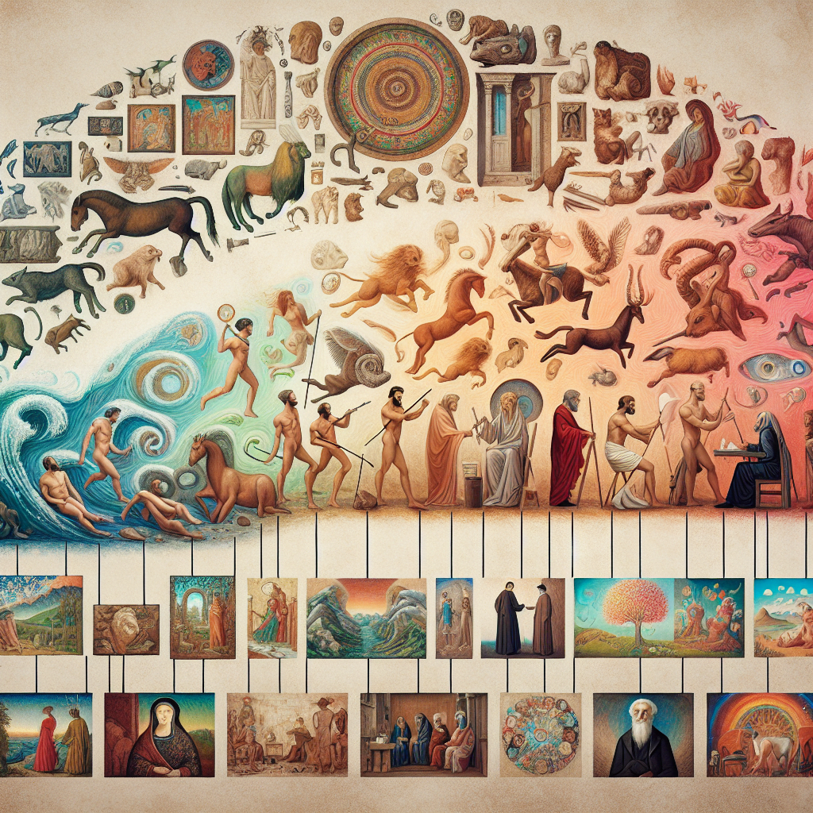
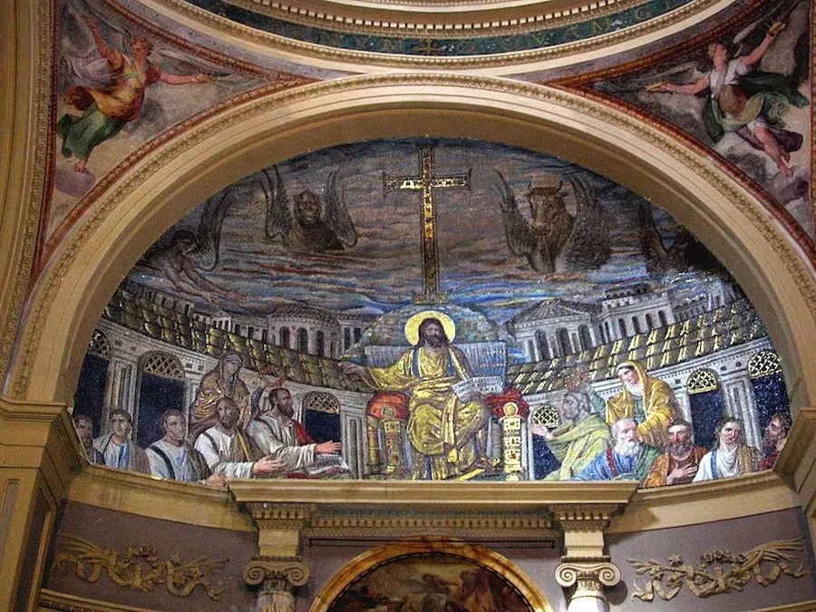
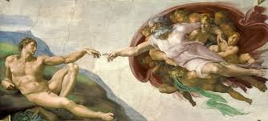
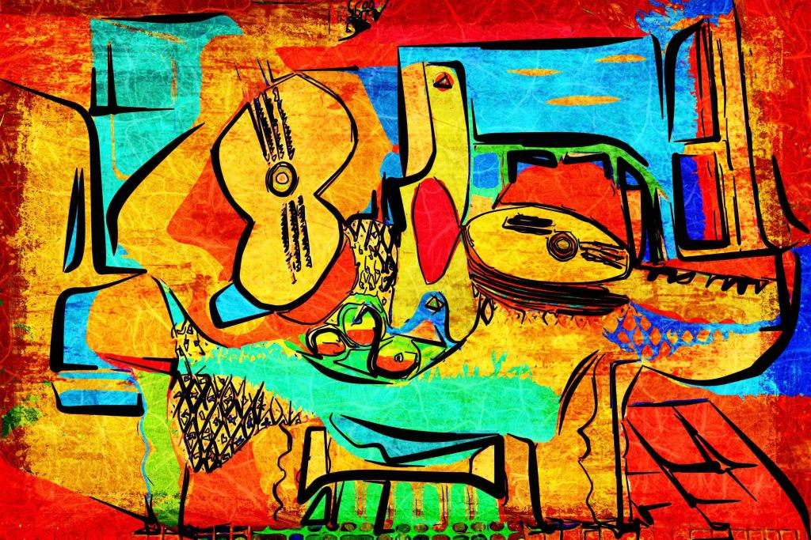
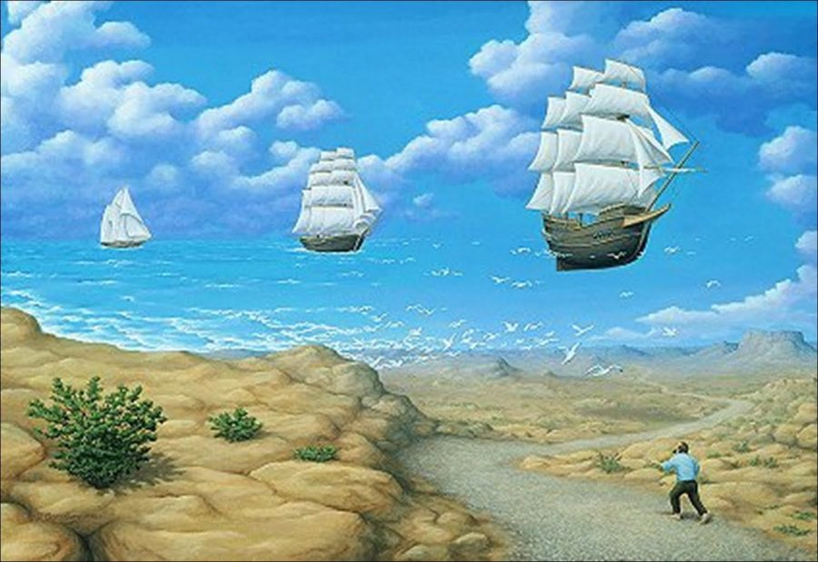
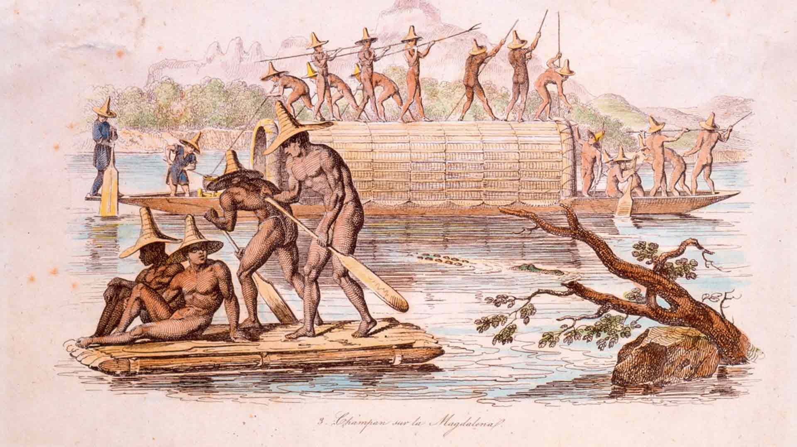
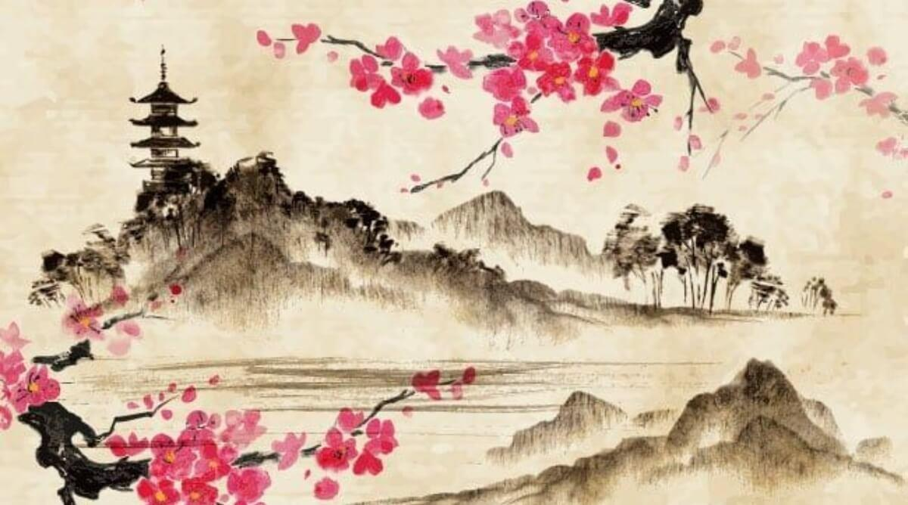
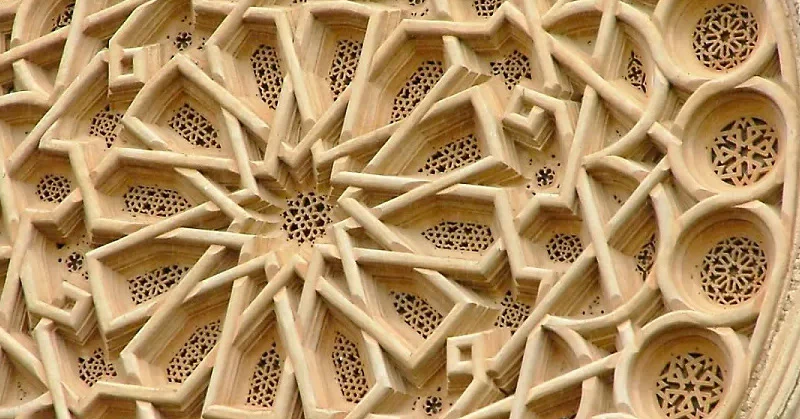
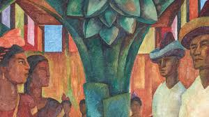
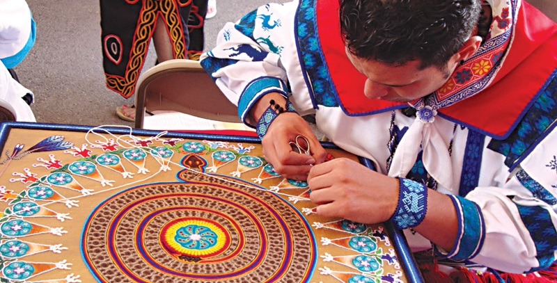

Descubre cómo el arte ha evolucionado a lo largo del tiempo, desde las primeras expresiones hasta las vanguardias actuales.
El concepto de arte en la Antigüedad no había alcanzado en ninguna civilización la consideración social de bellas artes que consiguió en la cultura occidental a partir del Renacimiento. Pintura,escultura y arquitectura (las artes visuales) eran equivalentes a las diferentes artesanías, habilidades o técnicas manuales (ars en latín, tekné en griego) que no gozaban de prestigio social en ninguna de las distintas formaciones económico-sociales de las primeras civilizaciones (modo de producción primitivo, modo de producción asiático o despotismo hidráulico y modo de producción esclavista). Durante el periodo clásico de Grecia, sí que hubo artistas destacados que se relacionaron con políticos e intelectuales, o lo eran ellos mismos (como Fidias); pero tal cosa sucedió más como excepción que como regla, e incluso actuó más como mitificación que como una valoración del artista concreto (el caso de Apeles).

El arte medieval es una etapa de la historia del arte que cubre un prolongado período para una enorme extensión espacial.1 La Edad Media —del siglo V al siglo XV— supone más de mil años de arte en Europa, el Oriente Medio y África del Norte. Incluye distintos períodos, cuya valoración estética, sujeta a cambiantes criterios, ha venido emitiendo distintas denominaciones calificativas, que llegan a etiquetar a algunos como "edades oscuras" y a otros como "renacimientos"; incluye a su vez muy diferentes movimientos artísticos con distinta difusión geográfica, desde los llamados "estilos internacionales" hasta las artes nacionales, regionales y locales; en definitiva, una enorme diversidad en las obras de arte (pertenecientes a los más diversos géneros) y en los propios artistas (que en la Alta Edad Media permanecían en el anonimato de una condición artesanal de poco prestigio social, como los demás oficios establecidos en régimen gremial, mientras que en los últimos siglos de la Baja Edad Media, sobre todo en el siglo XV, alcanzarán la consideración de cultivadores de las bellas casca, aumentando en consideración social y preparación intelectual).
El Renacimiento fue un movimiento cultural y artístico que floreció en Europa entre los siglos XIV y XVII, marcando el fin de la Edad Media y el comienzo de la Edad Moderna. Se inspiró en un renovado interés por las ideas de la antigua Grecia y Roma, promoviendo una visión humanista que situaba al ser humano y su capacidad de conocimiento en el centro de la vida intelectual y artística. Este período se caracterizó por un avance en las ciencias, la filosofía, y la exploración de nuevos métodos de representación visual. En el arte, el Renacimiento trajo innovaciones significativas: los artistas comenzaron a experimentar con la perspectiva lineal y la luz para crear profundidad, realismo y proporción en sus obras, logrando un sentido de tridimensionalidad y movimiento sin precedentes. Figuras como Leonardo da Vinci, Miguel Ángel y Rafael no solo exploraron estos conceptos, sino que sus obras celebraron la anatomía humana y los valores de la racionalidad, la belleza y la perfección idealizada. En escultura, pintura y arquitectura, el arte renacentista buscó armonía y equilibrio, reflejando un mundo donde el conocimiento y la belleza iban de la mano en busca de la comprensión profunda de la realidad.
El arte moderno se refiere a una amplia variedad de movimientos artísticos que surgieron entre finales del siglo XIX y mediados del siglo XX, marcando una ruptura con las tradiciones y los estilos clásicos. Este período se caracteriza por la experimentación y la exploración de nuevas formas de expresión que reflejan las profundas transformaciones sociales, tecnológicas y culturales de la época, incluyendo la industrialización, las guerras mundiales y el cambio en las estructuras sociales. Los artistas modernos, como Pablo Picasso, Wassily Kandinsky y Henri Matisse, comenzaron a cuestionar la representación fiel de la realidad, adoptando estilos más abstractos, expresivos y subjetivos. Movimientos como el impresionismo, cubismo, surrealismo y expresionismo reflejan esta diversidad, cada uno con un enfoque propio hacia el color, la forma, la composición y el contenido. En lugar de enfocarse en el realismo, el arte moderno buscó expresar emociones, ideas y visiones personales, poniendo al individuo y su perspectiva en el centro de la creación artística, y abriendo el camino a una concepción del arte como un espacio de libertad, crítica y experimentación continua.
El impresionismo, nacido en Francia a finales del siglo XIX, rompió con las normas académicas tradicionales para capturar la naturaleza cambiante de la luz y la vida cotidiana. Los artistas impresionistas se centraban en el efecto que la luz natural produce en los colores y las formas, utilizando pinceladas rápidas y colores vivos para crear una sensación de movimiento y espontaneidad. Pintores como Claude Monet y Pierre-Auguste Renoir trabajaron al aire libre, observando cómo los tonos y las sombras cambiaban con el paso del tiempo. En lugar de enfocarse en los detalles minuciosos, estos artistas buscaron plasmar una impresión visual y emocional de la escena, logrando un efecto vibrante y atmosférico que celebra la belleza del instante.

El surrealismo, que surgió en las décadas de 1920 y 1930, exploró el mundo del inconsciente y los sueños, desafiando las nociones convencionales de la lógica y la realidad. Inspirados por las teorías psicoanalíticas de Sigmund Freud, los artistas surrealistas buscaban revelar los deseos ocultos y los impulsos irracionales que yacen en el inconsciente. A través de imágenes oníricas, yuxtaposiciones insólitas y figuras distorsionadas, artistas como Salvador Dalí y René Magritte crearon escenas que desafían la lógica y la coherencia visual, transportando al espectador a un mundo de fantasía y simbolismo. Este estilo es una invitación a explorar la mente más allá de las restricciones racionales y a descubrir una realidad donde lo absurdo y lo imposible cobran vida.
El expresionismo, un movimiento que se desarrolló principalmente en Alemania a principios del siglo XX, se centra en la expresión visceral y emocional del artista. A diferencia de otros estilos que buscan capturar la realidad objetiva, el expresionismo utiliza colores intensos, líneas angulosas y formas distorsionadas para comunicar estados de ánimo profundos, como la angustia, el miedo o la euforia. Artistas como Edvard Munch y Ernst Ludwig Kirchner buscaban impactar al espectador, usando el arte como un reflejo de su visión subjetiva y muchas veces angustiante del mundo. A través de esta distorsión y exageración de la realidad, el expresionismo logra transmitir emociones profundas y conectar directamente con la experiencia humana, revelando las capas más intensas y vulnerables de la existencia.

El arte africano ha tenido un impacto profundo en los movimientos artísticos modernos, especialmente desde finales del siglo XIX. Caracterizado por sus formas geométricas, patrones audaces y representación simbólica de la figura humana y animal, el arte africano fue una fuente importante de inspiración para artistas como Pablo Picasso y Henri Matisse. Su enfoque en la abstracción, la simplificación de la figura humana y el uso de materiales naturales como madera, cerámica y textiles, ayudó a desafiar las tradiciones artísticas occidentales. Además, el arte africano influyó en la búsqueda de nuevas formas de expresión y significados, impulsando una mayor experimentación en el uso del color, la forma y la textura en el arte moderno. Su impacto en el arte contemporáneo sigue siendo evidente en la obra de artistas que buscan representar realidades culturales y espirituales de manera innovadora.
El arte oriental, con sus raíces profundas en las tradiciones de Asia, especialmente en China, Japón e India, ha sido una fuente clave de influencia en el arte occidental desde el siglo XIX. Este arte se caracteriza por su fuerte simbolismo, su énfasis en la espiritualidad y la conexión con la naturaleza. Los temas recurrentes incluyen la representación de lo divino, la naturaleza y el equilibrio entre el hombre y el universo, utilizando técnicas como la pintura de tinta, el grabado y la escultura de jade. A medida que los artistas occidentales comenzaron a interactuar con las culturas orientales, especialmente a través de las exposiciones universales y el comercio, movimientos como el impresionismo y el simbolismo se vieron profundamente influenciados por la estética oriental, su uso de colores suaves, la línea fluida y la perspectiva plana. El arte oriental ofreció una nueva manera de ver el espacio y la representación de la realidad, impactando tanto en la pintura como en la decoración, la arquitectura y la moda.
El arte islámico, que floreció en el mundo árabe y en áreas de Asia Central, el norte de África y la península ibérica, es conocido por su énfasis en la abstracción, la geometría y la caligrafía, en lugar de la representación figurativa. La influencia islámica se ha extendido a lo largo de los siglos, afectando tanto al arte religioso como al secular. El uso de patrones intrincados, arabescos y la estilización de la naturaleza y los elementos geométricos impactó la creación de arquitectura y decoración en todo el mundo. En el siglo XX, el arte islámico inspiró movimientos de diseño moderno, particularmente en la creación de patrones y decoraciones minimalistas que se alejaron de las representaciones figurativas. La conexión entre el arte islámico y el arte contemporáneo se ha mantenido viva a través de la admiración por sus formas ornamentales y la disciplina en la simetría, lo que ha sido adoptado en las artes visuales y la arquitectura moderna.
El arte latinoamericano ha jugado un papel crucial en la evolución del arte moderno, fusionando elementos indígenas, africanos y europeos. En el siglo XX, movimientos como el muralismo mexicano, impulsado por artistas como Diego Rivera y David Siqueiros, buscaron representar las luchas sociales, la historia y las culturas mestizas de América Latina a través de murales y pinturas que narran la identidad regional. Además, la exploración del surrealismo y el modernismo en Brasil y Argentina añadió nuevas perspectivas en cuanto a la forma, el color y la narración visual. A lo largo del tiempo, el arte latinoamericano ha sido una mezcla de tradiciones, ideologías y formas, influyendo en el arte contemporáneo con su enfoque en la política, la cultura y la historia, así como su experimentación con el color y la abstracción.
El arte indígena, presente en diversas culturas de América, Oceanía, Australia y el Pacífico, ha tenido una influencia significativa en las artes contemporáneas. Sus representaciones simbólicas de la naturaleza, los animales, las deidades y las tradiciones espirituales fueron redescubiertas por artistas modernos que buscaban una conexión más profunda con sus raíces y tradiciones culturales. La abstracción, el uso de patrones repetitivos y la estrecha relación entre el arte y la funcionalidad en las obras indígenas fueron cruciales para el desarrollo de nuevas formas de expresión en el arte contemporáneo. Además, la influencia de estas culturas se ha dado de forma constante en las colecciones de arte moderno y contemporáneo, especialmente a medida que los artistas contemporáneos han comenzado a rendir homenaje a sus tradiciones ancestrales a través de medios como la pintura, la escultura y el diseño.
